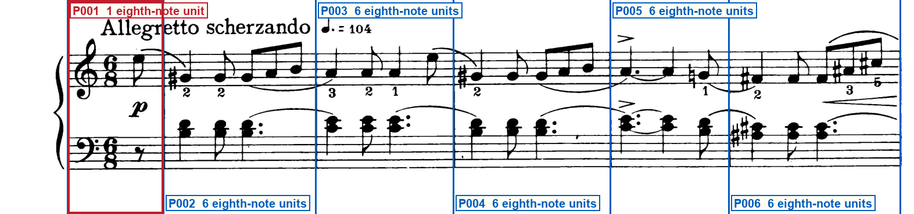
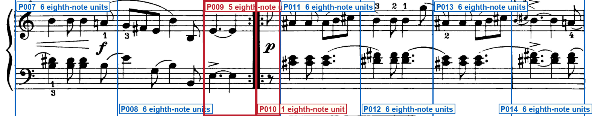
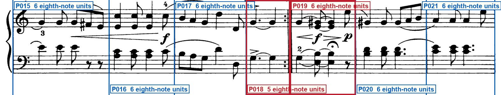
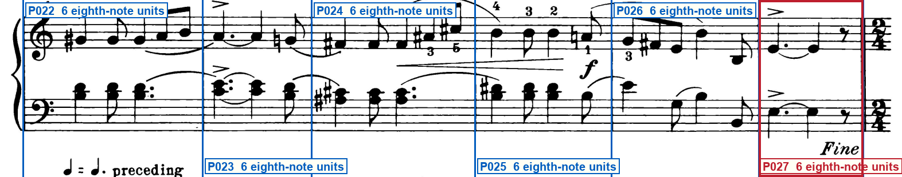
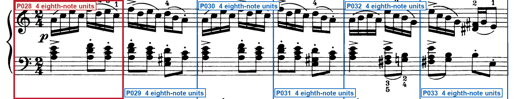
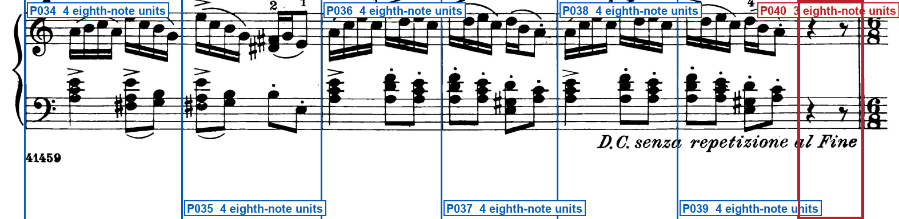

Printed-frame check
schumann_op68_11_sicilienne
Print-only inspection of the hashed page and six system crops finds 40 printed regions. System 1 opens with a one-eighth pickup after the treble and bass clefs and 6/8, then five full 6/8 bars; the closing slur continues into system 2 and is complete on the page. System 2 has two full 6/8 bars, a five-eighth first-strain ending into a backward-then-forward repeat, a one-eighth pickup with a visible barline after it, then four full 6/8 bars. System 3 has three full 6/8 bars, a five-eighth first ending with a backward repeat, a second-ending full 6/8 bar with fermata, then two full 6/8 bars. System 4 has six full 6/8 bars; the last is marked Fine, and a cautionary 2/4 stands after the closing double bar. System 5 reprints 2/4 and contains six full 2/4 bars. System 6 has six full 2/4 bars and a terminal three-eighth rest region, with a cautionary 6/8 after the final double bar and D.C. senza repetizione al Fine below. No key signature is printed. Clefs remain G and F with no changes. Proposed region counts, short-region lengths, repeats, and the 2/4 change after Fine match the printed pixels. Barline x-coordinates are the crop-pixel columns of the printed barlines.
Blue lines must sit on printed barlines. Red boxes require extra attention.
System 1 — 6 printed regions

- P001: opening pickup
System 2 — 8 printed regions

- P009: first-strain ending, backward-then-forward repeat
- P010: post-repeat pickup
System 3 — 7 printed regions

- P018: first ending, backward repeat
- P019: second ending, fermata
System 4 — 6 printed regions

- P027: Fine, cautionary 2/4 after closing barline
System 5 — 6 printed regions

- P028: printed 2/4
System 6 — 7 printed regions

- P040: terminal region, cautionary 6/8 after closing barline
Special checks
- System 1 after the opening 6/8: Is there a visible barline after the one-eighth pickup? Yes. The pickup is the eighth E in the right hand with an eighth rest in the left hand, and a complete barline stands at x=281.
- System 2 first-strain ending: Does the region before the first repeat contain five eighth-note units, and is the barline a backward-then-forward repeat? Yes. Dotted quarter E plus quarter E fill five eighth-note units. The double bar at x=680 has dots on both sides.
- System 2 after the repeat: Is there a visible barline after the post-repeat pickup? Yes. The pickup is a left-hand eighth rest and a right-hand eighth, and a complete barline stands at x=744.
- System 3 first ending: Does the first ending contain five eighth-note units and a backward repeat? Yes. Dotted quarter G plus quarter G fill five eighth-note units under the 1. bracket, with a thin-then-thick backward repeat at x=910.
- System 3 second ending: Is the second ending a full 6/8 bar rather than another short ending? Yes. The 2. bracket covers one full 6/8 bar with a fermata chord, hairpins, and an eighth rest, bounded at x=910 and x=1116.
- System 4 Fine: Is the last 6/8 region complete, and does 2/4 appear only as a cautionary after the closing barline? Yes. The Fine bar is a full 6/8 bar (dotted quarter, quarter, eighth rest). The 2/4 sits to the right of the closing double bar at x=1505 and is not a new region.
- System 5 opening: Does the printed meter change to 2/4 here, with six full 2/4 bars and no leftover 6/8 region? Yes. 2/4 is printed after the left barline, and six barlines close six full 2/4 bars.
- System 6 terminal region: Is the last region three eighth-note units, with 6/8 only a cautionary after the final barline? Yes. A quarter rest plus an eighth rest fill three eighth-note units. The cautionary 6/8 stands to the right of the final double bar at x=1510.
- Page 1 outermost ink: Do slurs, hairpins, dynamics, and the D.C. text stay inside the frozen page? Yes. System-break slurs continue from one crop into the next but remain on the page. Footer plate 41459 is non-musical.
Your three checks
- Do all staves, notes, rests, slurs and other musical marks fit completely inside the page?Expected: Yes
- Do the blue lines match every printed barline, giving 40 printed regions?Expected: Yes
- Do the highlighted pickups, endings, repeats and short regions match the printed score?Expected: Yes
Approve only after all three answers are Yes. Tell the Orchestrator: Frame approved or Frame rejected with the system number.